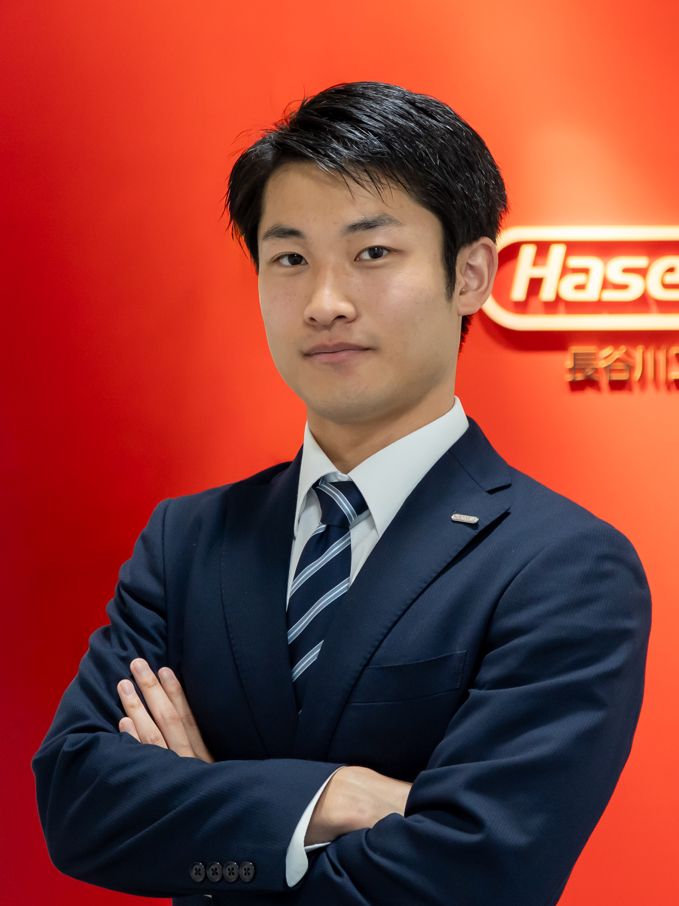

🏔️ 私について
関西お山登りサークル代表 榊原裕太です！
2003年9月27日生まれの22歳 大阪府富田林市に生まれる。幼少期から金剛山が好きでよく登っていました。 大学時代には関西大学お山登りサークルを設立。初期メンバーは私を含めて3人でしたが、現在では約30人のメンバーが所属しています。 これまでに金剛山、葛城山、摩耶山、大山などを登りました。 大学を卒業してからは関西お山登りサークルの代表として、引き続き社会人サークルとして活動しています。 これからも関西の山を中心に、いろんな山に登っていきたいと思っています！ " target="_blank→別のリンクを生成
登山の魅力
登山の魅力として山でしか味わえない絶景や自然はもちろんのこと、仲間とともに普段語れないことも話せたり、下山後に疲れた体を銭湯で癒したり、空腹の状態で食べるご飯は最高です！
🏔️ 登った山
プロフィール
| 名前 | 年齢 | 趣味 |
|---|---|---|
| Yuta Sakakibara | 22 | 登山 |
私の写真
